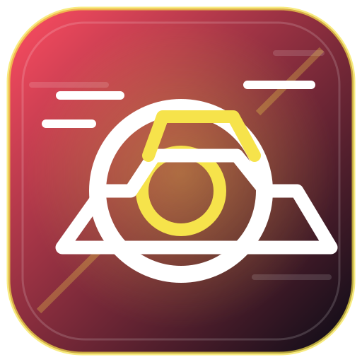
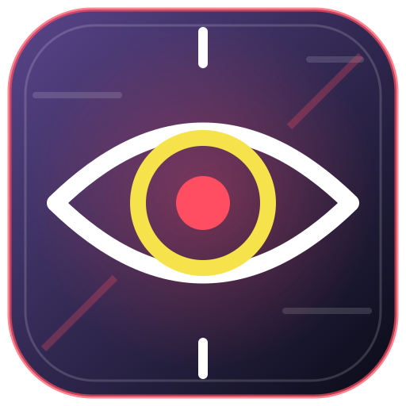
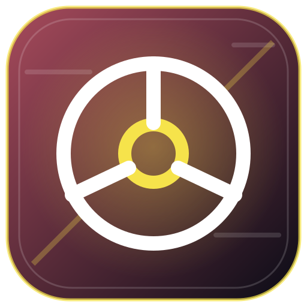
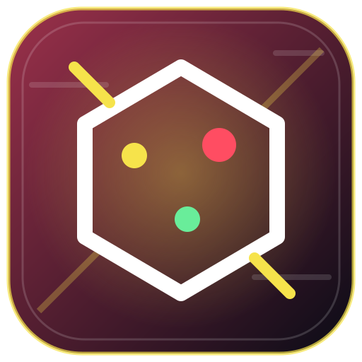
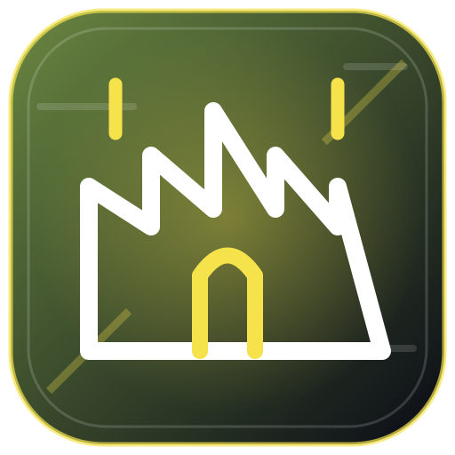
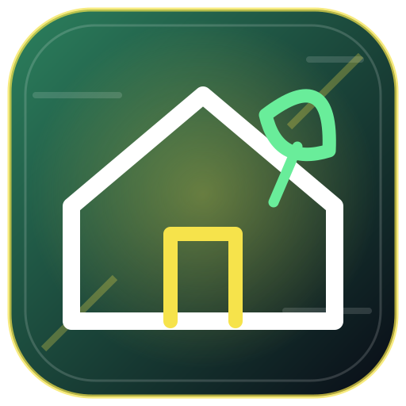

OTKAT GAMES · ИГРОВОЙ КАТАЛОГ
Выбери свой
следующий уровень.
Здесь собраны самостоятельные проекты OTKAT Games. Экспериментальные мини-игры и режимы вынесены в отдельную коллекцию и не считаются полноценными самостоятельными играми.

Driftline: Apex Circuit
RU: Дрифтлайн: трасса «Апекс»
Гараж, автомобили, настройка, собственные трассы и заезды.
ОТКРЫТЬ СТРАНИЦУ ИГРЫ ↗Hide & Seek
RU: Прятки
Спрячься, меняй облики и перехитри смотрителя парка.
ОТКРЫТЬ СТРАНИЦУ ИГРЫ ↗Survival
RU: Выживание
Исследуй архипелаг, собирай ресурсы и раскрывай тайну шторма.
ОТКРЫТЬ СТРАНИЦУ ИГРЫ ↗Arena
RU: Арена
Турниры, испытания и сражения на арене.
ОТКРЫТЬ СТРАНИЦУ ИГРЫ ↗
Forgotten
RU: Забытое
Найди пропавшего брата в месте, которое меняет прошлое.
ОТКРЫТЬ СТРАНИЦУ ИГРЫ ↗Skyrun
RU: Небесный забег
Преодолевай высоту, проходи маршруты и восстанавливай маяки.
ОТКРЫТЬ СТРАНИЦУ ИГРЫ ↗
Racing
RU: Гонки
Скорость, трассы и гонки в мегаполисе будущего.
ОТКРЫТЬ СТРАНИЦУ ИГРЫ ↗Space
RU: Космос
Исследуй космос и раскрой тайну исчезнувшей планеты.
ОТКРЫТЬ СТРАНИЦУ ИГРЫ ↗Magic
RU: Магия
Заклинания, артефакты и магические испытания.
ОТКРЫТЬ СТРАНИЦУ ИГРЫ ↗Prehistoric
RU: Доисторический мир
Древняя долина, динозавры и временной разлом.
ОТКРЫТЬ СТРАНИЦУ ИГРЫ ↗Neon Depths
RU: Неоновые глубины
Исследуй меняющиеся этажи неонового подземелья.
ОТКРЫТЬ СТРАНИЦУ ИГРЫ ↗
Last Stand: Swarm
RU: Последний рубеж: Рой
Отбивай волны врагов и выбирай усиления.
ОТКРЫТЬ СТРАНИЦУ ИГРЫ ↗
Tiny Kingdoms
RU: Маленькие королевства
Расширяй владения, собирай ресурсы и нанимай отряды.
ОТКРЫТЬ СТРАНИЦУ ИГРЫ ↗Orbital Rush
RU: Орбитальный рывок
Управляй кораблём, сражайся с противниками и боссами.
ОТКРЫТЬ СТРАНИЦУ ИГРЫ ↗
Cozy Valley
RU: Уютная долина
Выращивай урожай и развивай уютную ферму.
ОТКРЫТЬ СТРАНИЦУ ИГРЫ ↗Загрузки не смешиваются в общем списке: у каждой игры своя отдельная страница. Установочные пакеты появятся после сборки и проверки; пока доступны браузерные версии и прототипы на страницах проектов.
Открыть каталог мини-игр и прототипов
В коллекции есть самостоятельные небольшие игры, прототипы и варианты игровых режимов. Режимы и испытания не считаются отдельными полноценными играми.
ОТКРЫТЬ 105 ИГР И ИСПЫТАНИЙ ↗